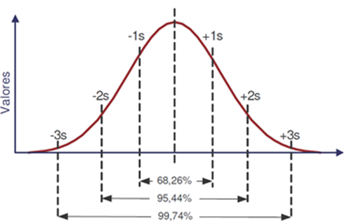

Nesta seção serão disponibilizados os principais conceitos do mercado finaneiro, especialmente aqueles necessários para a certificação CPA-20. Para organizar o conteúdo, serão tomados como base os módulos da prova. A sigla CPA significa Certificação Profissional Anbima e ela é uma certificação básica para quem quer entrar no mercado financeiro e trabalhar com a distribuição de produtos de investimentos. Como foi dito, os conteúdos aqui estarão disponíveis na ordem dos módulos cobrados na prova e podem ser um bom resumo para os estudos (foi o resumo que eu fiz e utilizei para estudar para a prova). Caso você tenha interesse em trabalhar nesta área, saiba que há muito material gratuito disponível na internet. O professor Fábio Louzada disponibiliza diversas lives e questões sobre o assunto. O site e o aplicativo da TopInvest também têm muito conteúdo bacana. Além disso, você pode ir no youtube e pesquisar por "cpa-20 edgar abreu" que você vai encontrar diversas vídeo-aulas sobre cada um dos módulos cobrados na prova. Caso tenha interesse em fazer a prova, mais informações podem ser encontradas no site oficial da Anbima.
Módulo 1 - Sistema Financeiro Nacional
Conselho Monetário Nacional (CMN)
- autoridade máxima do sistema financeiro nacional.
- membros:
- ministro da Fazenda
- ministro do Planejamento
- presidente do BACEN
- funções: cria normas, regula, define meta de inflação.
Banco Central
- composto por 8 diretorias + presidente (mesmo presidente do COPOM)
- órgão executor
- emite papel moeda, fiscaliza, pune, executa etc.
- recebe depósitos compulsórios, fiscaliza instituições financeiras.
- realiza operações de redesconto, gerencia reservas internacionais etc.
Comissão de Valores Mobiliários (CVM)
- composta por 1 presidente + 4 diretores.
- fiscaliza, pune, investiga e coíbe fraudes; protege o investidor.
- mercado de ações, fundos imobiliários (FIs), debêntures, CRIs, CRAs etc.
Superintendência de Seguros Privados (SUSEP)
- composto por 1 superintendente + 4 diretores.
- controla e fiscaliza o mercado de seguros, resseguros, capitalização e previdência complementar aberta.
Superintendência Nacional de Previdência Complementar (PREVIC)
- exerce as mesmas funções da SUSEP, porém para a previdência complementar fechada.
- fundos de pensão.
Tesouro Nacional
-
cuida dos recursos da União e emite títulos públicos.
-
Dealers
- instituições financeiras credenciadas pelo Tesouro para participarem ativamente da compra e venda de títulos.
- atualmente são 12 dealers (10 bancos e duas corretoras).
- desempenho avaliado a cada 6 meses.
Associação Brasileira das Entidades dos Mercados Financeiros e de Capitais (ANBIMA)
- responsável pela autorregulação do mercado de capitais.
Tipos de bancos
-
comercial:
- depósito à vista, depósito a prazo com rendimento (CDB).
- possibilidade de empréstimos e rendimentos.
- instituições financeiras privadas ou públicas S/A.
-
investimento:
- foco em investimentos de médio e longo prazo.
- é permitida a abertura de conta corrente, mas não pode emitir cheque.
-
múltiplos:
- opera com múltiplas carteiras.
- uma delas deve ser comercial ou de investimentos.
-
outras modalidades:
I. sociedade de crédito imobiliário. II. sociedade de credito financiamento e investimento. III. banco de desenvolvimento. IV. arrendamento mercantil.
Bolsa de valores (B3)
- ambiente eletrônico para negociação de títulos e valores mobiliários.
Sociedades distribuidoras /corretoras de títulos e valores mobiliários (DTVM/CTVM)
- instituição financeira sob a forma de sociedade por ações ou por quotas de responsabilidade limitada.
- podem administrar fundos e clubes de investimentos, intermediar operações de câmbio, distribuir produtos de outras instituições financeiras etc.
- obs.: corretagem de até 0,5% sobre o valor negociado.
Clearing – sistemas e câmara de liquidação e custódia
- trazem segurança ao sistema financeiro.
- Sistema Especial de Liquidação e Custódia (SELIC).
- títulos públicos federais (D+0).
- Central de liquidação e custódia de títulos (CETIP).
- títulos privados: CDB, debêntures, LCI, LCA etc. (D+0 e D+1).
- Câmara de ações (CA) – antiga CBLC
- ações, derivativos (futuro, opções, termo) (D+3 – que em 2019 passou a ser D+2).
- Sistema Especial de Liquidação e Custódia (SELIC).
Sistema de pagamentos brasileiro (SPB)
- finalidade: transferir recursos entre bancos viabilizando o processamento e a liquidação de pagamentos de pessoas, empresas, governo, BC e instituições financeiras.
Tipos de investidor
-
comum
-
qualificado
- valor mínimo: 1 milhão.
-
profissional
- valor mínimo: 10 milhões.
- tem acesso a produtos diferenciados.
- instituições financeiras, seguradoras, entidades de previdência etc.
-
não-residente
- residência no exterior e investimento no Brasil.
- é considerado investidor profissional.
Módulo 2 – Compliance, Ética e Análise do perfil do investidor
Prevenção contra a lavagem de dinheiro
- 3 etapas (COIn):
- colocação: inserção do dinheiro na economia (depósitos, compras de bens, financiamento dos valores etc.).
- ocultação: dificultar o rastreamento dos recursos (movimentar o dinheiro anonimamente, transferir para contas anônimas etc.).
- integração: os recursos são incorporados ao sistema financeiro (investir em empreendimentos).
Conselho de Controle de Atividades Financeiras (COAF)
- órgão máximo de combate à lavagem de dinheiro, vinculado ao ministério da Fazenda.
Ações preventivas
- conheça o seu cliente (know your customer)
- cadastro atualizado (doc., profissão, escolaridade, patrimônio, renda mensal etc.).
- observação da movimentação financeira.
- identificação e registro de operações
- manter registros pelo prazo de 5 anos (podendo ser estendido).
- comunicação ao COAF:
- valor maior ou igual a 50 mil.
- movimentação suspeita de valor maior ou igual a 10 mil.
- a comunicação deve ser feita até o próximo dia útil (o cliente não deve ser avisado).
- diretor responsável pelo cumprimento das medidas.
Penalidades administrativas
- advertência.
- multa pecuniária variável não superior a:
- a) ao dobro do valor da operação.
- b) ao dobro do lucro real obtido pela operação.
- c) ao valor de R$ 20 milhões (o que for menor).
- inabilitação por até 10 anos para cargos administrativos.
- cassação ou suspensão da autorização para exercício da atividade.
Responsabilidade e corresponsabilidades
- não há crime sem criminoso.
- reclusão de 3 a 10 anos e multa.
- a pena pode ser reduzida de 1 a 2/3 ou regime prisional convertido (de fechado para aberto).
Outros conceitos
- risco legal: relacionado à não execução de um contrato.
- risco de imagem: relacionado à reputação da instituição.
- venda casada: condicionar a venda de um produto à aquisição de outro (é diferente de vantagens oferecidas a clientes).
- insider trading: uso de informações que ainda não se tornaram públicas (ex.: comprar ações porque sabe de uma futura fusão).
- front running: uso de informações sobre operações no mercado que influenciarão nos preços (ex.: comprar ações antes do cliente).
- controles internos: segregação de funções (chinese wall).
- restrições do investidor: capacidade x vontade de correr risco (idade, horizonte de investimentos, conhecimento do produto, tolerância ao risco etc.).
- finanças pessoais:
- balanço patrimonial pessoal: ativos e passivos.
- fluxo de caixa: receitas e despesas.
- orçamento doméstico: parecido com o fluxo de caixa, mas com foco no futuro.
Análise do perfil do investidor (API)
- informações básicas:
- período que pretende manter o investimento.
- preferência quanto aos riscos.
- finalidades do investimento.
- situação financeira:
- receitas regulares declaradas.
- valores e ativos do patrimônio.
- necessidade futura de recursos.
- conhecimento sobre o produto:
- produtos, serviços e operações que tem familiaridade.
- informações sobre operações já realizadas no mercado (natureza, volume, frequência, período etc.).
- formação acadêmica e experiência profissional.
- análise dos produtos:
- riscos.
- perfil dos emissores.
- existência ou não de garantias.
- prazos de carência.
- é vedada a recomendação de produtos:
- perfil não adequado.
- informações do cliente não obtidas.
- informações não atualizadas (2 anos).
- aplicação por ordem do investidor pode ser feita, mas o profissional deve obter declaração do cliente e alertá-lo.
- a verificação do perfil é dispensável quando:
- for investidor qualificado ou profissional.
- PJ de direito público.
- cliente com carteira administrada discricionariamente por adm. autorizado.
Finanças comportamentais
-
As quatro principais heurísticas:
- representatividade:
- amostra pequena, uso de estereótipos para julgamento (ex.: olhar o desempenho passado sem considerar outros fatores).
- disponibilidade:
- informações recentes, ignorando fatos, facilidade da informação na mente (ex.: olhar apenas para o lucro).
- ancoragem:
- fazer estimativa a partir de um valor inicial (ex.: marketing de desconto).
- aversão à perda:
- relacionada ao medo de assumir o erro (ex.: não vender uma ação esperando ela valorizar).
- representatividade:
Módulo 3 – Noções de economia e finanças
Produto Interno Bruto (PIB)
- soma de todos os bens e serviços finais, em termos monetários e a valor de mercado, produzidos em uma determinada região durante certo período.
- PIB = C + I + G + (X - M).
- método do valor agregado (bens e serviços finais).
Índice de Preços ao Consumidor Amplo (IPCA)
- calculado pelo IBGE e usado pelo CMN para definir a meta de inflação.
- famílias que ganham de 1 a 40 salários mínimos residentes nas regiões metropolitanas das principais capitais.
- o CMN estabelece a meta da inflação ao BACEN.
Índice Geral de Preços do Mercado (IGP-M)
- calculado pela FGV.
- criado para abranger o atacado e a construção civil.
- é composto pelos seguintes índices:
- IPA – índice de preços do atacado – 60%.
- IPC – índice de preços ao consumidor – 30%.
- INCC – índice nacional da construção civil – 10%.
- é usado para indexar contratos.
- período de cada índice IGP-M:
- dia 21 ao dia 20: IGP-M.
- dia 01 ao dia 20: IGP-DI.
- dia 11 ao dia 10: IGP-10.
Taxa de juros – SELIC
- quanto maior esta taxa, menor será o consumo e o investimento em produção.
- Selic meta: definida pelo COPOM.
- Selic over: média das negociações de títulos públicos.
Certificado de Depósito Interbancário (CDI)
- média das negociações interbancárias.
- a taxa DI é o principal indexador no mercado de renda fixa.
Taxa Referencial (TR)
- usada para remunerar a poupança e o FGTS e na correção de contratos de crédito imobiliário.
- esta taxa deriva da TBF (taxa básica financeira) que, por sua vez, deriva das LTNs (letras do tesouro nacional).
- a fórmula da TR é TR = 100 * [(1 + TBF) / R – 1] e ela é calculada pelo BACEN.
- obs.: já faz um bom tempo que esta taxa está zerada.
Taxa de câmbio
- quantidade de reais necessária para comprar um dólar
- taxa SPOT: taxa para compra e venda imediata de dólares.
- taxa PTAX: média das cotações de dólar no mercado, calculada pelo BACEN e usada para liquidação de contratos no mercado financeiro.
Comitê de Política Monetária (COPOM)
- composto pela diretoria colegiada do BACEN.
- define a taxa SELIC e o viés (tendência de alta ou baixa da taxa).
- 8 reuniões ao ano.
Instrumentos de política monetária
- política de controle da liquidez e da inflação.
- taxa SELIC
- contracionista: + juros -> - investimento e consumo -> - inflação.
- expansionista: - juros -> - investimento e consumo -> + PIB e emprego (pode provocar aumento da inflação).
- taxa de redesconto (taxa de juros do BACEN para empréstimos aos bancos)
- contracionista: + taxa de redesconto -> - disponibilidade de crédito -> - investimento e consumo -> - inflação.
- expansionista: - taxa de redesconto -> + disponibilidade de crédito -> + investimento e consumo -> + PIB.
- depósitos compulsórios (parte dos recursos captados pelos bancos que devem ser depositados no BACEN)
- contracionista: + compulsório -> - disponibilidade de crédito -> - investimento e consumo -> - inflação.
- expansionista: - compulsório -> + disponibilidade de crédito -> + investimento e consumo -> + PIB.
- o aumento do compulsório pode levar a um aumento da taxa de juros, pois os bancos terão menos recursos para emprestar.
- open market (títulos públicos)
- contracionista: BACEN emite/vende títulos -> - moeda em circulação -> - inflação (e + juros).
- expansionista: BACEN resgata/compra títulos -> + moeda em circulação -> + PIB.
- obs.: ao emitir títulos, há dois principais motivos para o aumento da taxa de juros:
- o aumento da dívida leva à perda de confiança, o que exige juros maiores.
- com menos moeda, os bancos têm menos recursos para emprestar (o que os leva a cobrar mais caro pelo empréstimo).
- outros dois problemas da política monetária com títulos públicos:
- efeito de expulsão: ao vender títulos, há um incentivo para maior investimento no Estado e menor investimento no mercado.
- déficit comercial: a emissão de títulos atrai capital estrangeiro, que movimenta a taxa de câmbio, valorizando a moeda nacional, facilitando importações e dificultando exportações.
- taxa SELIC
Política fiscal
- receitas: tributos + privatizações.
- despesas: salários + obras + manutenção de patrimônio público.
- contracionista: + tributos e/ou - gastos do governo -> - investimento e consumo -> - inflação.
- expansionista: - tributos e/ou + gastos do governo -> + investimento e consumo -> + PIB e emprego.
- provoca aumento da inflação e da dívida pública.
Política cambial
- para evitar a desvalorização do real:
- BACEN vende dólares.
- a desvalorização ocorre quando há muita demanda por dólar.
- para evitar a valorização do real:
- BACEN compra dólares.
- ocorre quando há pouca demanda por dólar.
- real valorizado:
- gera desemprego e queda da arrecadação.
- importaríamos muito, deixando de consumir aqui.
- real desvalorizado:
- gera inflação, pois o produtor vende seu produto a um preço mais alto lá fora e, por isso, também cobrará mais caro aqui.
- gera necessidade de aumento de impostos, pois há dívidas cotadas em dólares.
Reservas internacionais
- ativos dos bancos centrais mantidos em diferentes reservas.
- país com reservas maiores tem melhores condições de enfrentar crises econômicas.
Contas do setor público
- receitas - despesas não financeiras = superávit ou déficit primário.
- pagamento de juros sobre a dívida (desp. financ.) = superávit ou déficit nominal.
- balança comercial: comércio de bens e serviços na forma de importação e exportação (exp - imp).
- pagamento de juros e dividendos entra na balança de serviços.
- transferências unilaterais: doações, subsídios (aquilo que não tem contrapartida).
- conta corrente: balança comercial + transferências unilaterais.
- conta de capitais: saldo líquido entre compra de ativos estrangeiros por residentes no Brasil e venda de ativos brasileiros a estrangeiros.
- balança de pagamentos: conta corrente + conta de capitais. Taxa de juros real e nominal
- taxa real = [((1 + taxa nominal) / (1 + IPCA)) – 1 ] * 100.
- taxa nominal > inflação = nº menor do que o resultado da subtração direta (resultado positivo).
- taxa nominal < inflação = nº maior do que o resultado da subtração direta (resultado negativo).
- deflação (inflação negativa): resultado maior do que a soma direta.
Regimes de capitalização
- capitalização simples:
- não há capitalização dos juros (2% a.m. = 24% a.a.)
- capitalização composta:
- juros sobre juros (VF = VP (1 + i)^n.
- taxa equivalente:
- usada para capitalização composta: TE = [(1 + i) ^(n1/n2)] * 100.
- n1 = período da taxa conhecida; n2 = período da taxa procurada.
Outros conceitos
- taxa livre de risco: SELIC.
- custo de oportunidade: o que você perde escolhendo alguma coisa.
- TIR: taxa interna de retorno - para definir se um negócio vale a pena.
- PMT: payment – parcela.
- WACC: weighted average capital cost – custo médio ponderado do capital; média ponderada dos juros/dividendos (capital de terceiros e capital próprio).
- alavancagem: capital de terceiros/capital próprio.
- prazo médio ponderado: mensura o prazo com base no valor de cada título.
- cupom: pagamento periódico de rendimentos sobre um investimento (cupom zero recebe tudo no final).
- mercado primário x secundário:
- primário: empresa lança títulos no mercado pela primeira vez.
- secundário: ativos negociados entre os investidores (permite a liquidez dos ativos).
- preço unitário (PU): valor do título hoje na data de negociação.
Módulo 4 – Instrumentos de renda variável, renda fixa e derivativos
4.1 Renda variável
- menor fração do capital social de uma empresa.
- ações ordinárias (ON): direito a voto.
- a empresa pode emitir até 100% de ON.
- ações preferenciais (PN): preferência nos dividendos.
- pelo menos 10% a mais de dividendos do que a ON.
- no máximo 50% das ações podem ser dessa categoria.
- ações ordinárias (ON): direito a voto.
- três anos consecutivos sem distribuir dividendos: a ação PN passa a dar direito ao voto.
- o controlador da companhia precisa manter 50% + 1 das ON.
Underwriting (subscrição)
- ofertante: a empresa ofertará ações (responsável pelas informações).
- banco coordenador: líder da distribuição.
- banco liquidante (ou mandatário): vai liquidar as vendas.
- escriturador: abre e mantem o livro de registros e envia informações ao acionista.
- central depositária: assume fiduciariamente a titularidade dos ativos no livro dos acionistas.
- custodiante: movimenta as ações dos clientes na central depositária.
- market maker (formador de mercado): mantém oferta de compra e venda durante a sessão de negociação para manter a liquidez.
- agente fiduciário: presente apenas na oferta pública de ativos de renda fixa (debêntures, CRI, CRA). Protege os investidores.
- agências de rating: classificam o risco do emissor de um título de renda fixa (AAA a D).
- opções de underwriting:
- melhores esforços: o que sobrar volta para a empresa (ou seja, risco da empresa).
- residual: banco tenta vender novamente (risco do banco e da empresa).
- garantia firme: banco compra 100% (risco do banco).
Prospecto
- de responsabilidade do banco coordenador.
- contém características da oferta pública.
- deve destacar que a oferta ainda está sob análise da CVM.
- depois da aprovação, deve ser elaborado o prospecto definitivo.
Conteúdo da oferta
- pode ser dada prioridade aos antigos acionistas.
- se houver muita demanda, pode ser ofertado um lote suplementar.
- não pode passar de 15% da quantidade ofertada.
- coleta de intenção de investimentos.
- pode haver recebimento de reservas para subscrição ou aquisição de valores mobiliários.
- material publicitário: dependerá da aprovação da CVM.
Initial Public Offering (IPO)
- oferta no mercado primário.
- reserva: intenção de compra.
- ordem a mercado: investidor não estabelece o preço a pagar.
- ordem limitada: investidor limita a compra a um valor.
Direitos do acionista
- ganho de capital: quando o investidor vende ações por preço superior ao da compra.
- subscrição: garante a possibilidade de o acionista manter a mesma participação no capital total.
- tag along: acionista minoritário pode vender suas ações por no mínimo 80% do valor pago ao majoritário.
- em caso de troca de controle da companhia.
Eventos societários
- dividendos: distribuição de parte dos lucros aos acionistas pagos exclusivamente em dinheiro.
- o estatuto deve prever a %, senão o mínimo é 25% (isento de IR).
- juros sobre o capital próprio: quando a empresa retém parte do lucro para reinvestimento ela deverá pagar juros por isso (o acionista paga 15% de IR retido na fonte).
- bonificações: distribuição de novas ações aos atuais acionistas em função do aumento do capital.
- inplit (grupamento): redução da quantidade de ações aumentando o valor de cada ação. Objetivo: redução do risco.
- split (desdobramento): aumento da quantidade de ações reduzindo o valor de cada ação. Objetivo: aumento da liquidez.
Despesas
- corretagem: tarifa para a corretora por toda ordem de compra e venda.
- custódia: tarifa de manutenção da conta (pode haver isenção).
- emolumentos: cobrados pela bolsa por pregão em que tenha ocorrido negócio.
- a taxa é de 0,035% do valor financeiro da operação.
- IR: alíquota única de 15%.
- recolhimento pelo próprio investidor via DARF.
- apurado no mês da negociação e deve ser recolhido até o último dia útil do mês subsequente.
- lucro do investidor é o valor de suas vendas menos suas despesas.
- a corretora recolhe 0,005% na fonte (“dedo duro”: antecipação de IR).
- fica dispensado se o valor for menor ou igual a R$ 1,00.
- pessoa física que vende em um mesmo mês menos do que R$ 20 mil está isenta de IR.
- não há IOF no mercado de ações.
- day trade: alíquota de 20% de IR (via DARF).
- corretora recolhe 1% sobre o lucro (dedo duro).
- não há isenção.
Compensação de perdas
- se houver prejuízo, pode ser compensado no IR posteriormente.
- ex.: prejuízo de R$ 5.000,00 em abril e lucro de R$ 8.000,00 em maio.
- IR sobre R$ 3.000,00 apenas.
- pode ser feita a qualquer momento (se ficar para o próximo ano, vai para a declaração anual).
- apenas investimentos na mesma modalidade.
Governança corporativa
- Nível 1:
- % mínima de ações em free float (livre circulação) de 25%.
- conselho de administração com no mínimo 3 membros com mandato unificado de até 2 anos.
- calendário público de eventos corporativos.
- tag along: 80% para ON.
- Nível 2:
- todas as exigências do nível 1.
- conselho de administração com no mínimo 5 membros (sendo no mínimo 20% independentes) com mandato unificado de até 2 anos.
- demonstrativos financeiros nos padrões internacionais.
- tag along: 100% para ON e 80% para PN.
- Novo Mercado:
- todas as exigências do nível 2.
- 100% das ações ON.
- IPO mínimo de 10 milhões.
- reunião pública anual em até 5 dias úteis após divulgação dos resultados trimestrais.
- conselho de administração com no mínimo 5 membros (2 ou 20% - o que for maior - independente).
Tipos de riscos
- mercado: quando o preço muda.
- liquidez: dificuldade para vender por preço justo.
- em renda variável não há risco de crédito (risco de não pagamento).
Análises
- técnica: análise gráfica.
- observa os preços passados (indicada para o curto prazo).
- fundamentalista: fatores macroeconômicos e fundamentos da empresa.
- ajuda a saber se um preço é justo ou não.
- indicadores utilizados:
- LPA (lucro por ação): lucro anual via dividendos: lucro líquido/quantidade de ações.
- P/L (preço/lucro): quanto tempo demora para recuperar o investimento: valor da ação/dividendos.
- EBITDA (earnings before interest, taxes, depreciation and amortization): lucro antes dos impostos, taxas, depreciação e amortização. Mede a capacidade de geração de caixa.
Recibos de depósitos de ações
- ADR – American depositary receipt: empresa com sede fora dos EUA, mas com títulos negociados em sua bolsa.
- BDR – Brazilian depositary receipt: empresa com sede fora do Brasil, mas com títulos negociados aqui.
Assembleia geral (ordinária e extraordinária)
- AGO: convocada anualmente para deliberar sobre demonstrações contábeis
- AGE: demais assembleias.
Outros termos do mercado de ações:
- swing trade: investimento de curto prazo.
- buy and hold: ações mantidas por longo período.
- circuit breaker: se acionado, interrompe o pregão.
- B3: acionado se houver queda de 10% no índice Ibovespa (30 min. de paralização); se continuar a queda e chegar a 15%: 1 hora de paralização.
- DARF: documento de arrecadação da receita federal.
- home broker: canal de relacionamento entre investidores e corretoras.
- lote padrão: lote de títulos iguais e em quantidade prefixada.
- roadshow: apresentar empresa para investidores.
- bookbuilding: formação de preços dos ativos normalmente por meio de leilão.
4.2 Renda fixa
- título com vencimento e taxa de juros conhecida no momento da contratação.
IOF: Imposto sobre Operações Financeiras
- cobrado até o 29º dia; isento a partir do 30º.
- 4-3-3 (1º dia: 96%; 2º dia: 93%; 3º dia: 90%, . . ., 29º dia: 3%; 30º dia: 0).
Tabela regressiva de IR
| prazo | percentual |
|---|---|
| até 180 dias | 22,5% |
| 181 a 360 dias | 20% |
| 361 a 720 dias | 17,5% |
| mais de 720 dias | 15% |
- o IR é calculado sobre o rendimento após incidência de IOF.
- há isenção para pessoa física em ativos relacionados a imóveis e agronegócio.
FGC – Fundo Garantidor de Crédito
- mantido pelos bancos.
- instituição privada sem fins lucrativos, cujo objetivo é proteger os investidores contra o risco de crédito.
- cobertura de até 250 mil reais por CPF, por instituição.
- limitada a 1 milhão de reais por um período de 4 anos.
- conta corrente, CDB, LCI, LCA, poupança, letras de câmbio, letra imobiliária, hipotecária etc.
Caderneta de poupança
- rentabilidade mensal – aniversário no dia da aplicação (dias 29, 30 e 31 = 01).
- liquidez diária, mas perda de rendimento em caso de saque antes do aniversário.
- rentabilidade: (regra a partir de 04/05/2012):
- SELIC maior do que 8,5% -> 0,5 a.m. (ou 6,17% a.a.) + TR.
- SELIC menor ou igual a 8,5% -> 70% da SELIC + TR.
- PJ tem rentabilidade trimestral.
- não há IOF.
- isenção de IR para pessoa física.
- no mínimo 65% do saldo da poupança deve ir para o crédito imobiliário.
CDB – Certificado de Depósito Bancário
- maneira de o banco tomar empréstimo de seus clientes.
- pode ser pré ou pós fixado.
- garantido pelo FGC.
- pode ou não oferecer liquidez diária.
- tabela regressiva de IOF e IR com retenção na fonte.
- apresenta risco de crédito, de liquidez e de mercado.
- não pode ser indexado à variação cambial.
LF – Letra Financeira
- semelhante ao CDB.
- elevado risco de crédito, pois não possui FGC.
- prazo mínimo de vencimento: 24 meses (portanto, IR de 15%).
- pode ter vencimento mais longo e admite pagamento de cupons.
- valor mínimo para emissão: 150 mil.
DPGE – Depósito a Prazo com Garantia Especial
- cobertura do FGC de até 20 milhões (por CPF, por instituição).
- mais utilizado por bancos menores.
- pode ser pré ou pós fixado.
- prazo de vencimento: de 6 a 36 meses.
- IR conforme tabela regressiva e tributação na fonte.
LCI – Letra de Crédito Imobiliário
- possui lastro, isto é, garantia real; também possui garantia do FGC.
- pessoa física é isenta de IR.
- prazos:
- prazo mínimo de 12 meses, se atualizada anualmente por IPCA ou IGP-M.
- prazo mínimo de 36 meses, se atualizada mensalmente por IPCA ou IGP-M.
- prazo mínimo de 90 dias, se não for atualizada pelos índices de inflação.
LCA – Letra de Crédito do Agronegócio
- semelhante ao LCI, mas direcionado ao agronegócio.
- a garantia pode ser uma propriedade rural ou mesmo o penhor da safra.
- não pode ser emitida com atualização mensal por índice de preços.
CCI – Cédula de Crédito Imobiliário
- o banco antecipa os recebíveis.
- IR conforme tabela regressiva.
- não possui FGC, mas possui garantia real.
- qualquer investidor pode ter acesso, mas costuma ser negociado entre o emissor e companhias securitizadoras e fundos de investimento.
CRI – Certificado de Recebível Imobiliário
- título de longo prazo emitido por companhia securitizadoras.
- transforma fluxos futuros em valores mobiliários.
- não possui FGC, mas possui lastro no crédito imobiliário (garantia real).
- emissão mínima: 300 mil reais.
- isenção de IR para pessoa física.
CRA – Certificado de Recebível do Agronegócio
- lastro no agronegócio e mesmas características do CRI.
CPR – Cédula do Produtor Rural
- emitido por produtor rural ou cooperativa para financiar a produção.
- produtor antecipa a venda de sua produção.
- banco ou seguradora dão aval/garantia.
- deve ser registrada em cartório.
- lastro geralmente é o penhor rural; não tem FGC.
- pode ser negociado no mercado primário ou secundário.
- pessoa física isenta de IR.
CDCA – Certificado de Direitos Creditórios do Agronegócio
- emitido por cooperativas ou PJs da área.
- negociação de recebíveis do agronegócio.
- geralmente cooperativa em posse de CPR deseja emitir CDCA.
- pode ser pré ou pós fixada.
- pessoa física isenta de IR.
- emitido com alienação fiduciária.
COE – Certificado de Operações Estruturadas
- mescla elementos de renda fixa e variável.
- oferecidos por bancos de investimentos.
- pode ou não ter capital protegido (valor nominal protegido x em risco).
- não tem FGC.
- tabela regressiva de IR.
- documento de informações essenciais.
Operação compromissada
- possui lastro em ativos de propriedade do banco.
- possui cobertura do FGC se o lastro por título emitido por empresa ligada ao banco emissor.
- tributação conforme tabela regressiva de IR e sujeito a IOF.
CCB - Cédula de Crédito Bancário
- promessa de pagamento em dinheiro decorrente de operação de crédito.
- não tem FGC.
- risco de crédito associado ao emissor do título.
- assim como o CPR, é uma promessa de pagamento.
- tributação conforma tabela regressiva de IR.
Títulos públicos federais
- são cinco tipos de títulos:
- LTN – Letra do Tesouro Nacional (tesouro prefixado).
- LFT – Letra Financeira do Tesouro (tesouro SELIC).
- NTN-B (principal) – Nota do Tesouro Nacional série B principal (tesouro IPCA+).
- NTN-B – Nota do Tesouro Nacional série F (tesouro IPCA+ com juros semestrais).
- NTN-F – Nota do Tesouro Nacional série F (tesouro prefixado com juros semestrais).
- LTN: sempre negociada com deságio.
- LFT: pode apresentar rentabilidade diferente da SELIC devido ao ágio ou deságio.
- com ágio: inferior à SELIC; com deságio: superior à SELIC.
- quanto maior a taxa de juros, menor o preço de compra.
- não tem FGC (e nem precisa).
- tributado conforme tabela regressiva.
- pós-fixados: para alta da taxa de juros.
- pré-fixados: para queda da taxa de juros.
- híbridos: inclui proteção para a inflação.
Debêntures
- títulos de renda fixa emitidos por empresas não financeiras.
- SA de capital aberto para captação de recursos de longo prazo (capital fixo).
- pode ser conversível: resgatada em ações no final.
- pode haver resgate antecipado.
- não tem FGC.
- tributação conforme tabela regressiva.
- garantia: (re-flu-qui-su)
- real: aliena um bem à operação.
- flutuante: também aliena um bem, mas ele pode ser trocado.
- quirografária: sem preferência, isto é, se houver falência o investidor concorre igualmente com os demais credores.
- subordinada: não concorre em igualdade com outros credores, sendo subordinados e eles.
- escritura: deve conter todas as informações sobre as debêntures.
- agente fiduciário:
- não é analista ou garantidor da emissão.
- exerce fiscalização, verificando a escritura.
- pode usar qualquer ação para proteger os direitos do debenturista.
- executar garantias reais, requerer falência da emitente etc.
- debêntures incentivadas:
- isenção de IR para pessoa física.
- IR de 15% para pessoa jurídica.
- prazo mínimo para resgate: 24 meses.
NP - Notas Promissórias
- emitidas por SAs não financeiras.
- para captação de curto prazo (capital de giro).
- prazos:
- 360 dias, se emitida por SA com capital aberto.
- 180 dias, se emitida por SA com capital fechado.
- prazo mínimo: 30 dias.
- não tem FGC nem garantia real.
Código ANBIMA para distribuição de produtos de investimentos
- as instituições estão dispensadas de observar esse código para:
- união, estados, municípios e DF (incluindo RPPS).
- PJ dos segmentos classificados como middle e corporate.
- caderneta de poupança.
4.3 Derivativos
- instrumentos de investimentos que derivam de um ativo.
- objetivo: transferência de risco.
- participantes (players):
- hedger: aquele que busca proteção.
- especulador: assume o risco para lucrar com a oscilação de preços.
- arbitrador: busca lucro em distorções nos preços dos ativos em diferentes mercados.
Mercado de swap
- swap: troca (de fluxo financeiro).
- troca de indexadores.
- contraparte: instituição financeira.
- contrato customizado.
- valor base: valor do contrato.
- ponta passiva: indexador que o investidor deixa de receber após contratação do swap.
- ponta ativa: indexador que o investidor passa a receber após contratação do swap.
- ajuste positivo: valor que o investidor recebe se sua ponta ativa render mais do que a passiva.
- ajuste negativo: valor que o investidor para se sua ponta passiva render mais do que a ativa.
- IR retido na fonte pela contraparte (tabela regressiva).
- não há compensação de perdas.
- swap de fluxo de caixa: modalidade em que os justes são feitos periodicamente.
- swap com pagamento final: swap bullet – faz o acerto dos ajustes somente no vencimento.
- risco de crédito: contraparte não honrar o pagamento.
- risco de mercado: os preços dos ativos são incertos.
Mercado de opções
- contrato que dá ao seu detentor o direito, mas não o dever – de comprar ou vender determinado ativo pelo preço de exercício.
- contrato padronizado.
- o lançador da opção tem a obrigação de exercer o contrato se assim a contraparte desejar.
- termos:
- call: opção de compra.
- put: opção de venda.
- lançador: player que vende a opção.
- titular: player que compra a opção.
- prêmio: preço de negociação pago pelo titular.
- exercício de opção: operação pela qual o titular exerce seu direito.
- strike: preço de exercício da opção.
- opção americana: pode ser liquidada a qualquer momento durante a vigência do contrato.
- opção europeia: pode ser liquidada apenas no vencimento.
- in the money: exercer uma opção representa lucro para o titular.
- out of the money: exercer uma opção representa prejuízo para o titular.
- at the money: exercer uma opção não representa lucro nem prejuízo.
- o titular tem como perda máxima o prêmio pago pela opção.
- esse é o lucro máximo do lançador.
Mercado a termo
- semelhante ao mercado de opções, mas as partes são obrigadas a exercer o contrato.
- contrato customizado.
- termos:
- vendedor: tem o compromisso de entregar o bem na data prevista com o preço acordado.
- comprador: compromisso de pagar o preço acordado.
- prazo: não há regra, mas não é comum um prazo maior do que 999 dias.
- liquidação antecipada: pode ocorrer por decisão do vendedor.
- formas de negociação: mercado de balcão e registrada na clearing da B3.
- liquidação: física ou por diferença financeira.
- quando não há entrega física, havendo apenas liquidação financeira (non derivable foward).
- exige garantia e tem risco de crédito.
- IR: 15%.
Mercado futuro
- negociar no presente a compra ou venda de um ativo no futuro pelo preço combinado hoje.
- contrato padronizado.
- margem de garantia: a B3 terá um valor alocado pelo cliente que servirá de garantia da operação.
- liquidação antecipada: não há essa possibilidade, mas o investidor pode inverter sua operação anulando sua exposição ao contrato.
- ajuste diário: as cotações dos ativos e dos contratos são atualizadas diariamente.
- isso não ocorre nos outros derivativos.
- risco de contraparte: ao recolher a margem de garantia, a B3 arrume o risco de contraparte.
- há nesse mercado o arbitrador, que acaba ajudando os preços a chegarem ao equilíbrio.
Módulo 5 – Fundos de Investimentos
Características
- comunhão de recursos sob a forma de condomínio.
- o dinheiro fica na mão de um gestor profissional.
- os investidores são os cotistas e o gestor cuidará da aplicação.
Registro
- CNPJ próprio.
- administrado por instituição financeira.
- administrador é o responsável legal.
- ele faz o registro na CVM com os seguintes documentos e informações: regulamento, registro em cartório, informações complementares, declaração de contratos com terceiros, nome do auditor independente, CNPJ, informações básicas, lâmina, declaração de adequação à legislação.
Documentos dos fundos
- regulamento: regras de funcionamento.
- lâmina: informações importante para o cotista; características operacionais e indicadores.
- formulário de informações complementares: dados mais técnicos; complementa a lâmina.
- termo de adesão e ciência de risco: assinado pelo investidor.
Chinese Wall
- segregação entre gestão e recursos próprios e de terceiros (deve haver segregação física).
Cota
- valor da cota: PL/nº de cotas.
- o administrador calcula esse valor diariamente.
- são escriturais e nominativas.
- cotas de fundos abertos podem ser transferidas (exceção para casos especiais).
FI e FIC
- FI: fundos de investimentos compram ativos no mercado financeiro.
- FIC: fundos de investimentos em cotas terão no mínimo 95% de cotas de outros fundos.
Fundos abertos e fundos fechados
- abertos:
- investidor pode entrar a qualquer momento.
- nº de cotas variável.
- não tem data de vencimento.
- recompra de cotas é garantida pelo administrador.
- sem carência: investidor por comprar e vender cotas a qualquer momento.
- com carência: entrada a qualquer momento, mas resgate apenas no final do prazo de carência.
- fechados:
- não pode entrar e sair a qualquer momento.
- nº de cotas limitado (não é possível que o gestor crie cotas quando há aplicação de novos cotistas).
- tem data certa para entrada de cotistas (abertura do fundo ou período de novas captações).
- pode ou não ter um vencimento; se houver, há resgate compulsório das cotas no vencimento.
- recompra de cotas não ocorre a qualquer momento, mas ela pode ser negociada no mercado secundário.
Fundos exclusivos e fundos restritos
- exclusivos:
- apenas para um cotista (ele deve ser investidor profissional).
- restritos:
- apenas para um pequeno grupo de cotistas (devem ser investidores qualificados).
- podem entrar empregados ou sócios das instituições administrativas ou gestoras e familiares do investidor profissional (desde que ele detenha no mínimo 90% das cotas).
Cota de abertura e cota de fechamento
- abertura:
- investidor sabe o valor no início do dia.
- só é permitido em fundos com baixa volatilidade de preços (renda fixa e exclusivos).
- fechamento:
- investidor só saberá o valor da cota no final do dia.
- obrigatório para fundos com maior oscilação.
Marcação a mercado (apreçamento dos ativos)
- precifica as cotas dos fundos pelo valor de mercado dos títulos que compõem a carteira (valor do dia).
- obrigatório para todos os fundos (exceto exclusivos).
- o objetivo é evitar a transferência de riqueza entre cotistas.
Prazo para cotização e descotização
- cotização: compra de cotas.
- descotização: venda de cotas.
- solicitação de resgate, cálculo do valor (conversão) e pagamento.
- pagamento deve ser feito em cheque, crédito em conta corrente ou ordem de pagamento.
- não pode ser maior do que 5 dias após a conversão.
- o administrador pode declarar o fechamento do fundo para resgates no caso de fechamento do mercado ou em casos excepcionais de iliquidez dos ativos.
- se permanecer fechado por mais de cinco dias consecutivos, o administrador deve convocar uma assembleia geral extraordinária (AGE) para deliberar sobre as possibilidades de substituição do administrador ou gestor; reabertura ou não do fundo; possibilidade de pagamento em ativos financeiros, cisão ou liquidação do fundo.
Atos ou fatos relevantes
- o administrador deve divulgar imediatamente qualquer fato que possa interferir no valor das cotas ou na decisão do investidor.
Assembleia geral de cotistas
- AGO: ocorre uma vez ao ano; aviso com 30 dias de antecedência; 120 dias após o fechamento do exercício (assim como com ações).
- AGE: a qualquer momento.
- convocação: pelo administrador, com 10 dias de antecedência.
- gestor, custodiante, cotista ou grupo de cotistas (com no mínimo 5% das cotas) também podem convocar; nesse caso, o administrador tem até 30 dias para convocar os demais participantes.
- não podem votar na assembleia: administrador, gestor (sócios e funcionários dos mesmos), prestadores de serviços do fundo.
- a ata deve ser divulgada em até 30 dias após a assembleia.
Funções e responsabilidades dos fundos
- administrador: responsável legal.
- gestor: compra e venda de títulos/ativos; estratégia; prevenção à lavagem de dinheiro.
- distribuidor de cotas: venda de cotas.
- custodiante: guarda dos ativos e marcação a mercado.
- auditor independente.
Direitos dos cotistas
- diariamente: o administrador deve informar o valor da cota e o PL do dia.
- mensalmente: o administrador deve enviar extrato com informações gerais da rentabilidade.
- anualmente: o administrador deve disponibilizar as demonstrações contábeis e o informe de rendimentos para o IR.
Distribuição por conta e ordem
- o fundo pode autorizar o distribuidor a realizar a subscrição de cotas por conta o ordem dos clientes.
- os distribuidores assumem o ônus e responsabilidades relacionadas ao clientes.
Despesas
- taxa de administração:
- cobrada por todos os serviços para sua operacionalização.
- taxa fica expressa em % ao ano, deduzida diariamente e cobrada mensalmente do PL do fundo; esta taxa afeta o valor da cota.
- a rentabilidade divulgada é líquida desta taxa.
- taxa de performance:
- cobrada quando a rentabilidade supera o benchmark.
- limitada a 20% do que exceder o benchmark com período mínimo de 180 dias.
- pode ser cobrada somente depois de deduzidas todas as outras despesas.
- taxa de entrada e de saída:
- não são comuns, mas podem ser cobradas.
Políticas de investimento
- fundos passivos: buscam acompanhar o benchmark.
- fundos ativos: buscam superar o benchmark.
- fundos alavancados: são fundos ativos e podem fazer empréstimos ou uso de derivativos, sendo exposto a maior risco.
- a responsabilidade para cobrir prejuízos é do cotista.
Classificação CVM
- fundos de renda fixa: devem investir no mínimo 80% em renda fixa e não têm taxa de performance (exceto dívida externa).
- curto prazo: prazo médio menor do que 60 dias; prazo máximo de um ativo: 375 duas; é menos volátil.
- referenciado: 95% do PL em ativos com referência ao benchmark; no mínimo 80% em títulos públicos federais ou títulos privados de baixo risco.
- dívida externa: 80% do PL em ativos fora do país (pode ter taxa de performance).
- simples: 95% do PL em títulos públicos federais ou títulos privados de baixo risco; dispensa termo de adesão e ciência de risco.
Fundo de crédito privado
- no mínimo 50% do PL em ativos de emissão privada.
- maior risco de crédito.
- alerta de perda substancial.
Fundo cambial
- no mínimo 80% do PL em ativos com parâmetros em moedas estrangeiras.
- segue a PTAX e possui taxa de performance.
Fundo multimercado
- não há restrição em relação ao PL.
- possui taxa de performance.
Fundos de ações
- no mínimo 67% do PL em ações.
- segue o Ibovespa, IBrX, ISE etc.
- é indicado para o longo prazo.
- não há come cotas.
- possui taxa de performance.
Classificação Anbima
- nível 1: classe de ativos.
- nível 2: tipo de gestão / nível de risco.
- nível 3: estratégia.
Limites de concentração por emissor
- para não haver concentração de risco.
- até 100% em títulos públicos federais.
- até 20% em instituição financeira.
- até 10% em companhia aberta.
- até 10% em fundo de investimento.
- até 5% pessoa natural ou jurídica de direito privado.
Tributação
- come cotas:
- sistema de antecipação semestral de IR que ocorre nos últimos dias úteis de maio e novembro; ou seja, o fundo recolhe IR da valorização das cotas a cada 6 meses independente do resgate.
- alíquota mínima fixa: 20% no curto prazo e 15% no longo prazo.
- tabela regressiva:
- aplica a tabela regressiva de IR no resgate considerando o que foi antecipado no come cotas.
- fundos de ações não têm come cotas, apenas alíquota de 15% no resgate.
- fundos com carência de até 90 dias terão come cotas no vencimento de cada carência.
Compensação de perdas
- existe para fundos de mesma classificação.
- adm. não é obrigado a oferecer compensação.
- somente após resgate do fundo com prejuízo.
Material técnico e publicitário
- publicitário:
- deve incluir link para o técnico.
- técnico:
- objetivo e estratégia.
- público alvo.
- carência para resgate e prazo de operação.
- tributação.
- informações sobre canais de atendimento.
Histórico de rentabilidade
- apenas fundos com + de 6 meses.
- incluir mês anterior; mês a mês ou valor acumulado no ano; incluir anos anteriores; usar a mesma metodologia ao longo do tempo.
- fundos com menos de 12 meses: divulgar desde a data de constituição até o mês anterior.
- a divulgação de rentabilidade deve acompanhar comparação com metas no regulamento.
Outros fundos
FII - Fundo de Investimentos Imobiliários
- fechado com duração determinada ou não.
- devem distribuir no mínimo 95% do lucro.
- no máximo 25% do PL pode ser investido em cotas de FI ou renda fixa.
- não pode atuar em mercados futuros ou de opções.
- tributação:
- o administrador recolhe.
- rendimento (aluguel) deve ser dividido entre os cotistas mensalmente e é isento de IR.
- o ganho de capital (na venda da cota) possui IR de 20%.
- o prospecto deve ser elaborado pelo administrador fiduciário.
ETF – Exchange Traded Funds
- fundos de índices.
- comercializados na B3 como ações.
- visam acompanhar um índice de referência.
- devem ter no mínimo 95% do PL no índice.
- fundo fechado sem vencimento (negociado no mercado secundário).
- tributação:
- 15% no resgate.
- não tem IOF nem come cotas.
FIDC – Fundos de Investimento em Direitos Creditórios
- mais de 50% em direitos creditórios.
- apenas para investidores qualificados.
- podem ser abertos ou fechados.
- valor mínimo: 25 mil.
- benefícios:
- redução do risco de crédito e liberação de espaço no balanço.
- maior liquidez.
- maior retorno do que a renda fixa.
- tipos de cotas:
- sênior: não se subordina para amortização e resgate.
- subordinada: se subordina à sênior.
- tem risco de crédito (calote).
- podem operar no mercado de derivativos apenas para proteção.
- tributação:
- tabela regressiva de IR; recolhido na fonte.
- não tem come cotas.
FIP – Fundo de Investimentos em Participações
- no mínimo 90% do PL em ações, debêntures ou outros ativos permutáveis em ações.
- apenas para investidores qualificados.
- condomínio fechado.
- recursos destinados para companhias em fase de desenvolvimento.
- deve participar do processo decisório da companhia (indicar membros do conselho administrativo)
- aplicação mínimo: 100 mil.
- tributação: 15% no resgate.
Fundos off-shore
- gestor no Brasil investe no exterior e a sede do fundo é no exterior.
Módulo 6 – Previdência Complementar Aberta
Previdência social
- obrigatória.
- benefícios:
- salário maternidade, auxílio doença/acidente, pensão por morte, auxílio reclusão, salário família e aposentadoria.
Previdência complementar
- EAPC – Entidade Aberta de Previdência Complementar:
- apesar de ser um fundo, não pode comprar ativos no mercado financeiro. O dinheiro dos investidores deve ser alocado em um fundo de investimento específico (FIE), que é constituído especialmente para que as EAPCs possam acessar o mercado financeiro.
Taxa de carregamento
- muitas não cobram mais.
- usada para despesas administrativas.
- pode ser cobrada na entrada, na saída ou na portabilidade.
- cobrada somente sobre o valor aplicado e nunca sobre o rendimento.
- taxa máxima de 10%.
Taxa de administração
- semelhante aos FIs.
- taxa fixa ao ano cobrada sobre o total do patrimônio da EAPC.
Portabilidade
- externa: migração entre instituições.
- interna: migração entre planos.
- ex.: conservador para multimercado.
- resgate ou portabilidade: pode mudar a cada 60 dias.
Tabela regressiva
| prazo | alíquota |
|---|---|
| até 2 anos | 35% |
| de 2 a 4 anos | 30% |
| de 4 a 6 anos | 25% |
| de 6 a 8 anos | 20% |
| de 8 a 10 anos | 15% |
| acima de 10 anos | 10% |
- indicada para o longo prazo (maior do que 4 anos).
Tabela progressiva
| base de cálculo mensal | alíquota | fator dedutível |
|---|---|---|
| até R$ 1.903,98 | isento | - |
| de R$ 1.902,99 a R$ 2.826,65 | 7,5% | R$ 142,80 |
| de R$ 2.826,66 a R$ 3.751,05 | 15% | R$ 354,80 |
| de R$ 3.751,09 a R$ 4.664,68 | 22,5% | R$ 636,13 |
| acima de R$ 4.663,68 | 27,5% | R$ 869,36 |
- indicada para o curto prazo (menos do que 4 anos).
- recomendada para renda baixa.
- também chamada de compensável.
- pode ser restituído.
- IR no resgate: paga 15% na fonte; depois faz o ajuste (para cima ou para baixo).
Migração entre planos
- de progressiva para regressiva pode ser feita a migração, mas o tempo é zerado.
- de regressiva para progressiva não pode ser feita a migração.
- a portabilidade pode ser feita de PGBL para PGBL e de VGBL para VGBL.
PGBL – Plano Gerador de Benefício Livre
- indicado para quem faz a declaração de renda completa
- IR é cobrado sobre o valor total (contribuição e rendimento); tributação na fonte.
- deduz 12% da renda bruta anual.
VBGL – Vida Gerador de Benefício Livre
- não deduz IR.
- o IR é cobrado sobre a rentabilidade no resgate.
- é aconselhável para quem não faz a declaração completa.
Módulo 7 – Gestão e Mensuração de Performance e Riscos
Medidas estatísticas
- variância: mede o grau de dispersão dos dados; é o desvio em relação à média.
- desvio padrão: é a raiz quadrada da variância; medida de risco: volatilidade do ativo; quanto maior o desvio, maior o risco.
- covariância: quando os dados se movem em conjunto; quanto mais próxima de 0, menor a chance de ter um padrão nos dados.
- correlação: medida de associação; varia de -1 até 1 (correlação perfeita negativa e correlação perfeita positiva respectivamente); próxima de zero: não há correlação.
- coeficiente de determinação (R²): varia de 0 até 1; é a correlação elevada ao quadrado; mede o quanto a variação de uma variável explica da variação de outra.
- distribuição normal
- na imagem a seguir está um exemplo de distribuição normal, juntamente com os desvios padrão e os seus respectivos percentuais.

Tipos de risco
- mercado: variação dos preços.
- risco sistemático: risco que envolve todo o mercado;
- risco não sistemático: envolve apenas uma empresa.
- liquidez: não conseguir vender o ativo a um preço justo.
- crédito: calote (cross default diminui esse risco); ações não têm esse risco.
- operacional: falha no processamento da operação (dedo gordo).
- contraparte: risco da parte não cumprir o combinado (clearing acaba com esse risco).
- risco país: capacidade de pagamento do país.
Seleção de carteiras e modelo de Markowitz
- quanto maior o risco, maior a rentabilidade.
- a diversificação diminui o risco.
- quanto maior o rating, mais seguro e menor o risco.
Beta
- é um indicador de risco sistemático de uma ação.
- quanto maior o valor de beta, maior o risco.
- calculado em relação a uma carteira de mercado.
- beta > 1: mais agressivo do que o ibovespa.
- beta = 1: neutro.
- beta < 1: ativo defensivo.
Duration de Macaulay
- quanto maior o duration, maior o risco de mercado.
- título zero cupom: duration igual ao prazo de vencimento.
- título com cupom: duration menor do que o prazo de vencimento.
Medidas de performance
- índice de Sharpe:
- mede a relação risco retorno.
- quanto maior, melhor a relação.
- fórmula: (retorno do fundo – retorno do ativo livre de risco) / desvio padrão do fundo.
- índice de Sharpe modificado: usa o var no lugar do desvio padrão.
- índice de Traynor:
- também mensura a relação risco retorno.
- porém, usa o beta como medida de risco.
- fórmula: (retorno do fundo – retorno do ativo livre de risco) / beta do fundo.
- entende que usar o risco sistemático é mais eficiente do que o risco total.
- quanto maior, melhor.
Administração e gerenciamento de risco
- tracking error: mede a aderência do fundo ao banchmark; quanto maior o tracking, menos aderente.
- VAR – value at risk: quanto o fundo ou carteira pode perder em valor de mercado.
- back testing: voltar e testar a metodologia de risco para saber se está dentro dos limites estabelecidos pelo VAR.
- stop loss: proteger a carteira contra perdas superiores ao VAR.
- stress test: “VAR” para cenários de estresse do mercado.